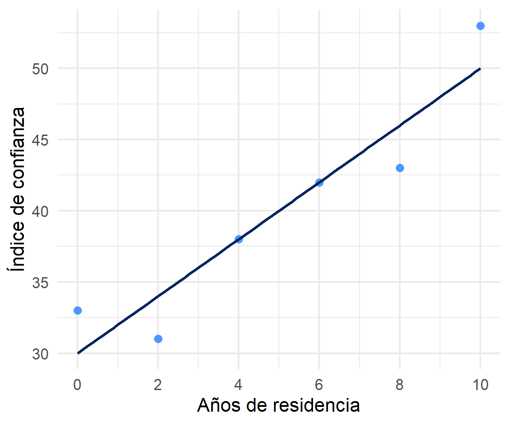
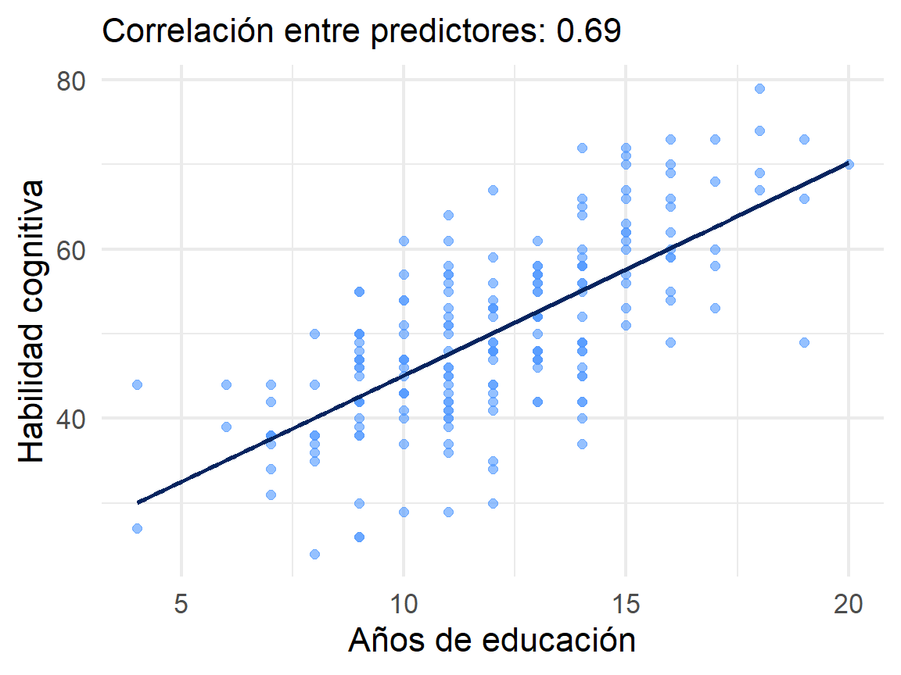
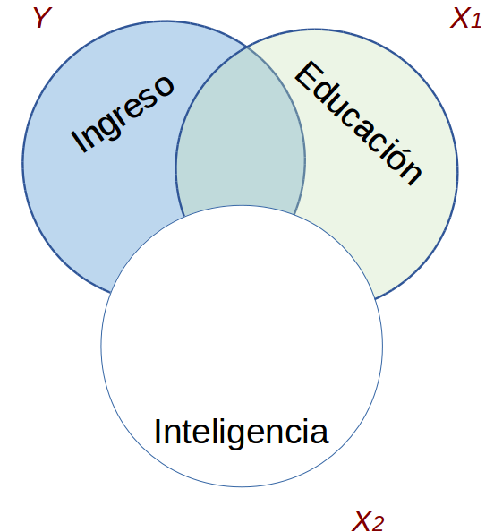
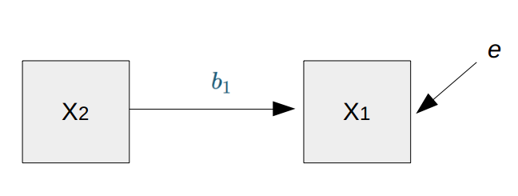
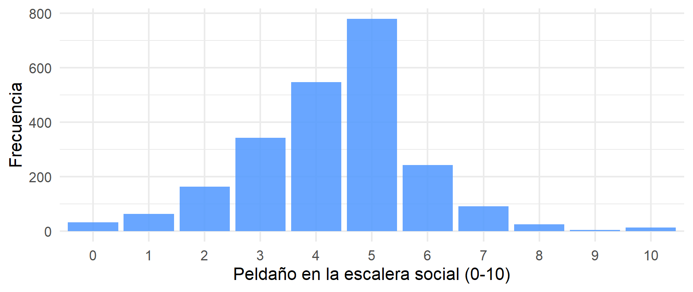

Métodos estadísticos para
Ciencias Sociales III
Kevin Carrasco
Sociología - UNAB
2do Sem 2026
https://metod3-unab.netlify.app/
Sesión 4
Repaso sesión anterior
Regresión múltiple
Parcialización y control estadístico
¿Dónde quedamos?
Evaluamos el ajuste del modelo descomponiendo la varianza de \(Y\): \(SS_{tot}=SS_{reg}+SS_{error}\), y de ahí el \(R^2\)
En el ejemplo de educación e ingresos obtuvimos \(\widehat{Y}=200+25X\), con un \(R^2\) de 0,677
Vimos inferencia: el error estándar, el estadístico \(t\), el valor p y los intervalos de confianza
Todo eso, sin embargo, con una sola variable independiente
Hoy
Los hechos sociales son multideterminados: ¿cómo incorporamos varios predictores?
¿Qué significa exactamente interpretar un coeficiente manteniendo constantes las demás variables?
¿Por qué el coeficiente de una variable cambia al agregar otra al modelo?
Repaso: estimación de coeficientes
Antes de avanzar, practiquemos
Antes de agregar predictores, conviene tener firme el procedimiento con uno solo
Recordemos las fórmulas:
\[b_{1}=\frac{\sum_{i=1}^{n}(x_i - \bar{x})(y_i - \bar{y})} {\sum_{i=1}^{n}(x_i - \bar{x})^2} \qquad b_{0}=\bar{Y}-b_{1}\bar{X}\]
- Un ejemplo nuevo: ¿se relaciona el tiempo de residencia en el barrio con la confianza en los vecinos?
Ejercicio: arraigo territorial y confianza
\(X\): años de residencia en el barrio. \(Y\): índice de confianza en vecinos (0 a 100)
| Caso | X (años de residencia) | Y (índice de confianza) | X - X̄ | Y - Ȳ | (X - X̄)(Y - Ȳ) | (X - X̄)² |
|---|---|---|---|---|---|---|
| Caso 1 | 0 | 33 | ||||
| Caso 2 | 2 | 31 | ||||
| Caso 3 | 4 | 38 | ||||
| Caso 4 | 6 | 42 | ||||
| Caso 5 | 8 | 43 | ||||
| Caso 6 | 10 | 53 | ||||
| Promedios / Sumas | X̄ = | Ȳ = | Σ = | Σ = |
Ejercicio: paso 1, los promedios
| Caso | X (años de residencia) | Y (índice de confianza) | X - X̄ | Y - Ȳ | (X - X̄)(Y - Ȳ) | (X - X̄)² |
|---|---|---|---|---|---|---|
| Caso 1 | 0 | 33 | -5 | -7 | ||
| Caso 2 | 2 | 31 | -3 | -9 | ||
| Caso 3 | 4 | 38 | -1 | -2 | ||
| Caso 4 | 6 | 42 | 1 | 2 | ||
| Caso 5 | 8 | 43 | 3 | 3 | ||
| Caso 6 | 10 | 53 | 5 | 13 | ||
| Promedios / Sumas | X̄ = 5 | Ȳ = 40 | Σ = | Σ = |
Verificación útil: las columnas de diferencias siempre suman cero
Ejercicio: paso 2, los productos
| Caso | X (años de residencia) | Y (índice de confianza) | X - X̄ | Y - Ȳ | (X - X̄)(Y - Ȳ) | (X - X̄)² |
|---|---|---|---|---|---|---|
| Caso 1 | 0 | 33 | -5 | -7 | 35 | 25 |
| Caso 2 | 2 | 31 | -3 | -9 | 27 | 9 |
| Caso 3 | 4 | 38 | -1 | -2 | 2 | 1 |
| Caso 4 | 6 | 42 | 1 | 2 | 2 | 1 |
| Caso 5 | 8 | 43 | 3 | 3 | 9 | 9 |
| Caso 6 | 10 | 53 | 5 | 13 | 65 | 25 |
| Promedios / Sumas | X̄ = 5 | Ȳ = 40 | Σ = 140 | Σ = 70 |
Ejercicio: paso 3, los coeficientes
\[b_{1}=\frac{\sum(x_i - \bar{x})(y_i - \bar{y})} {\sum(x_i - \bar{x})^2}=\frac{140} {70}=2\]
\[b_{0}=\bar{Y}-b_{1}\bar{X} = 40-(2 \times 5)=30\]
\[\widehat{Y}=30+2X\]
Ejercicio: interpretación
Pendiente: por cada año adicional de residencia en el barrio, el índice de confianza aumenta 2 puntos
Intercepto: quien acaba de llegar al barrio tiene un índice esperado de 30 puntos
Aquí el intercepto sí es interpretable, porque \(X=0\) corresponde a un caso posible
Ejercicio: comprobación en R
Una advertencia sobre este resultado
¿Es el arraigo lo que genera confianza?
¿O son las personas de mayor edad, con más patrimonio o en barrios más estables las que llevan más años en el mismo lugar?
Para responderlo necesitamos más de un predictor
Regresión múltiple
Hechos sociales multideterminados

Un fenómeno social rara vez depende de un solo factor
El ingreso no se explica únicamente por la educación: también intervienen la experiencia, el sector económico, el origen social, entre otros
La regresión múltiple permite incorporar varios determinantes simultáneamente
De uno a varios predictores

\[\widehat{Ingreso}=b_0+b_1(Educ)\]

\[\widehat{Ingreso}=b_0+b_1(Educ)+b_2(Int)\]
La ecuación de regresión múltiple
\[\widehat{Y}=b_{0} + b_{1}X_{1} + b_{2}X_{2} + \dots + b_{k}X_{k}\]
\(b_0\): valor esperado de \(Y\) cuando todas las variables independientes valen 0
\(b_1\): cuánto cambia \(Y\) por cada unidad de \(X_1\), manteniendo constantes las demás variables del modelo
Geométricamente, ya no ajustamos una recta sino un plano (con dos predictores) o un hiperplano (con más)
INTERPRETACIÓN
Por cada unidad que aumenta \(X_1\), \(Y\) aumenta en \(b_1\)
manteniendo constantes las demás variables del modelo
Control estadístico
Característico del análisis de datos secundarios (por ejemplo, encuestas), donde no podemos asignar aleatoriamente a las personas a distintas condiciones
Se incluyen en el modelo variables que teóricamente podrían dar cuenta de la relación entre \(X\) e \(Y\), o afectarla
Esto despeja o controla la asociación entre \(X_1\) e \(Y\), aislándola de aquello que comparte con \(X_2\) (… y \(X_n\))
Es el equivalente estadístico de lo que en un experimento se logra por diseño
Un ejemplo
Tenemos datos de 200 personas con tres variables: ingreso, años de educación y un puntaje de habilidad cognitiva.
| Variable | Media | DE |
|---|---|---|
| Ingreso | 690.4 | 116.4 |
| Educación | 12.0 | 3.0 |
| Habilidad | 50.2 | 10.7 |

Regresión simple vs múltiple
| Modelo 1 | Modelo 2 | Modelo 3 | ||||
|---|---|---|---|---|---|---|
| Predictores | β | std. Error | β | std. Error | β | std. Error |
| (Intercept) | 338.80 *** | 22.99 | 257.41 *** | 23.92 | 222.38 *** | 22.08 |
| educ | 29.21 *** | 1.85 | 14.61 *** | 2.10 | ||
| intelig | 8.63 *** | 0.47 | 5.82 *** | 0.58 | ||
| Observations | 200 | 200 | 200 | |||
| R2 / R2 adjusted | 0.556 / 0.554 | 0.634 / 0.632 | 0.706 / 0.703 | |||
| * p<0.05 ** p<0.01 *** p<0.001 | ||||||
¿Qué le pasó al coeficiente?
En el modelo simple, el coeficiente de educación es 29.21
Al agregar habilidad cognitiva, baja a 14.61
No es un error: son dos cantidades que responden a preguntas distintas
- Modelo 1: ¿cuánto difiere el ingreso entre personas con distinta educación?
- Modelo 3: ¿cuánto difiere el ingreso entre personas con distinta educación pero igual habilidad cognitiva?
El coeficiente de un predictor depende de qué otras variables están en el modelo
Por eso nunca se interpreta un \(\beta\) sin decir qué se está controlando
Parcialización
¿Cómo se despeja?
¿Cómo se despeja la regresión de \(Y\) en \(X_1\) del efecto de \(X_2\)?

La idea

\(X_1\) parcializada de \(X_2\) es todo lo de \(X_1\) que no tiene que ver con \(X_2\)
En otras palabras: en un modelo donde \(X_1\) es la variable dependiente y \(X_2\) la independiente, \(X_1\) parcializada equivale al residuo de esa regresión
Parcialización paso a paso
Paso 1. Predecimos educación a partir de habilidad cognitiva:
Parcialización paso a paso
Paso 3. Estimamos el ingreso a partir de esa educación parcializada:
Son el mismo número
La regresión múltiple parcializa automáticamente cada predictor respecto de todos los demás
RESUMEN
Si hay correlación entre predictores, el valor de los coeficientes será distinto en modelos simples y en modelos múltiples
Esa diferencia se relaciona con el concepto de parcialización: se extrae la varianza común entre predictores
La parcialización permite el control estadístico: despejar el efecto de una variable de la influencia de otras
Consecuencias
Variable omitida
Si una variable relevante queda fuera del modelo, y está correlacionada con nuestro predictor, el coeficiente estimado recoge también parte de ese efecto
En el ejemplo: el modelo 1 atribuía a la educación algo que en realidad correspondía a la habilidad cognitiva
Por eso el modelo 1 no está “mal calculado”: está mal especificado respecto de la pregunta que queremos responder
¿Qué variables controlar?
La decisión es teórica, no estadística: se controla por aquello que la literatura señala como determinante común de \(X\) e \(Y\)
Agregar predictores solo porque están disponibles no mejora el modelo; puede incluso distorsionarlo
Un caso a evitar: controlar por una variable que es consecuencia de \(X\), porque eso elimina justamente el efecto que se quiere estimar
Ajuste en regresión múltiple
El \(R^2\) se interpreta igual que antes: la proporción de la varianza de \(Y\) asociada al conjunto de predictores
Problema: el \(R^2\) nunca disminuye al agregar variables, aunque sean irrelevantes
Por eso se utiliza el \(R^2\) ajustado, que penaliza la incorporación de predictores adicionales:
\[R^2_{aj} = 1-(1-R^2)\frac{N-1}{N-k-1}\]
Ajuste en nuestro ejemplo
| Modelo | R² | R² ajustado |
|---|---|---|
| 1. Solo educación | 0.556 | 0.554 |
| 2. Solo habilidad | 0.634 | 0.632 |
| 3. Ambas | 0.706 | 0.703 |
Al momento de comparar modelos con distinto número de predictores, corresponde basarse en el \(R^2\) ajustado
Un límite: la colinealidad
La parcialización funciona porque los predictores no son idénticos entre sí
Si dos variables están muy correlacionadas, queda poca varianza propia en cada una una vez parcializada
La consecuencia es un aumento del error estándar: los coeficientes se vuelven inestables e imprecisos
Volveremos sobre esto en la unidad de supuestos del modelo
Un ejemplo de investigación
El punto de partida
Chile es uno de los países con mayor concentración del ingreso del mundo
Cabría esperar, entonces, que las personas se ubicaran de forma dispersa al describir su propia posición social
La evidencia internacional muestra lo contrario: una fuerte tendencia a situarse en el medio
Un hallazgo conocido
Castillo, Miranda y Madero-Cabib (2013), Todos somos de clase media: sobre el estatus social subjetivo en Chile, Latin American Research Review, 48(1)
Documentan una distorsión sistemática entre el estatus objetivo (educación, ingreso, ocupación) y el estatus subjetivo (dónde cree la persona que está)
¿Se replica ese patrón en ELSOC?
¿Cuánto pesan la educación y el ingreso en la posición que las personas se atribuyen?
Los datos
ELSOC 2016 (primera ola), 2301 casos con información completa
elsoc <- elsoc_long_2016_2022.2 %>%
filter(ola == 1) %>%
select(d01_01, m01, m29, m0_edad) %>%
set_na(., na = c(-999, -888, -777, -666)) %>%
rename("estatus" = d01_01, "educacion" = m01,
"ingreso" = m29, "edad" = m0_edad) %>%
na.omit() %>%
filter(ingreso >= 50000, ingreso <= 5000000) %>%
mutate(ing100 = ingreso / 100000)El filtro de ingreso descarta valores implausibles producto de errores de registro. El ingreso se expresa en cientos de miles de pesos para que el coeficiente sea legible
La variable dependiente
“Imagine una escalera donde 0 es el nivel más bajo de la sociedad y 10 el más alto. ¿En qué peldaño se ubicaría usted?”

Figure 3
Un 72.5% de las personas se ubica entre los peldaños 3 y 5
En el país más desigual de la OCDE
Descriptivos
| Variable | Media | DE |
|---|---|---|
| Estatus subjetivo (0-10) | 4.33 | 1.53 |
| Nivel educacional (1-10) | 5.16 | 2.18 |
| Ingreso del hogar (cientos de miles) | 5.88 | 5.58 |
| Edad | 46.07 | 15.14 |
Antes de estimar: las correlaciones
| estatus | educacion | ing100 | edad | |
|---|---|---|---|---|
| estatus | 1.000 | 0.291 | 0.275 | -0.047 |
| educacion | 0.291 | 1.000 | 0.471 | -0.354 |
| ing100 | 0.275 | 0.471 | 1.000 | -0.158 |
| edad | -0.047 | -0.354 | -0.158 | 1.000 |
Dos cosas para retener: educación e ingreso se correlacionan positivamente entre sí (0.471), mientras que educación y edad lo hacen de forma negativa (-0.354)
Los modelos
| Modelo 1 | Modelo 2 | Modelo 3 | ||||
|---|---|---|---|---|---|---|
| Predictores | β | std. Error | β | std. Error | β | std. Error |
| (Intercepto) | 3.273 *** | 0.078 | 3.290 *** | 0.077 | 2.922 *** | 0.146 |
| Nivel educacional | 0.204 *** | 0.014 | 0.145 *** | 0.016 | 0.161 *** | 0.016 |
| Ingreso (cientos de miles) | 0.049 *** | 0.006 | 0.048 *** | 0.006 | ||
| Edad | 0.006 ** | 0.002 | ||||
| Observations | 2301 | 2301 | 2301 | |||
| R2 / R2 adjusted | 0.085 / 0.084 | 0.109 / 0.108 | 0.113 / 0.111 | |||
| * p<0.05 ** p<0.01 *** p<0.001 | ||||||
Primer movimiento: agregar ingreso
Educación, sola: 0.204
Educación, controlando por ingreso: 0.145
El coeficiente cae cerca de un 30%
La razón es la correlación entre ambos predictores (0.471): parte de lo que el modelo 1 atribuía a la educación correspondía en realidad al ingreso que la acompaña
Segundo movimiento: agregar edad
Educación, controlando por ingreso: 0.145
Educación, controlando además por edad: 0.161
Ahora el coeficiente sube
Educación y edad se correlacionan negativamente (-0.354): las generaciones mayores alcanzaron menos años de escolaridad
Un mismo modelo muestra los dos comportamientos
Agregar ingreso redujo el coeficiente de educación
Agregar edad lo aumentó
El caso más llamativo: la edad
Estimada por sí sola, la edad se asocia negativamente con el estatus subjetivo:
¿Cómo se explica la inversión?
Las personas mayores tienen, en promedio, menor nivel educacional
Como la educación eleva el estatus subjetivo, la comparación bruta entre personas de distinta edad mezcla dos efectos opuestos
Al comparar personas con la misma educación y el mismo ingreso, las de mayor edad se ubican más arriba en la escalera
La asociación negativa bivariada era, en rigor, un artefacto de la composición educativa de las generaciones
Interpretación de los tres coeficientes
Educación (0.161): por cada nivel educacional adicional, el estatus subjetivo aumenta en 0.161 puntos, a igual ingreso y edad
Ingreso (0.048): por cada cien mil pesos adicionales de ingreso del hogar, el estatus aumenta 0.048 puntos, a igual educación y edad
Edad (0.0063): por cada año adicional, el estatus aumenta 0.0063 puntos, a igual educación e ingreso
¿Son efectos grandes?
Pasar de un ingreso de 450 mil a uno de un millón (cinco unidades y media) implica subir apenas 0,27 puntos en una escala de 0 a 10
El modelo completo explica un 11.3% de la varianza del estatus subjetivo
Es decir: la posición objetiva predice muy poco la posición que las personas se atribuyen
Ese resultado no es una debilidad del modelo: es el hallazgo
Cómo se reporta
Se estimaron tres modelos de regresión lineal sobre el estatus social subjetivo, medido en una escala de 0 a 10, con datos de la primera ola de ELSOC (2016; N = 2301). El nivel educacional presenta una asociación positiva y significativa en las tres especificaciones, aunque su magnitud disminuye al controlar por ingreso del hogar (de 0.204 a 0.145), lo que resulta consistente con la correlación entre ambos predictores (r = 0.471). La edad, que estimada de forma bivariada muestra una asociación negativa (-0.0048), invierte su signo al incorporar los controles (0.0063; p < 0,01): a igual nivel educacional e ingreso, las personas mayores se ubican más arriba en la escalera social. El conjunto de predictores explica un 11.3% de la varianza, cifra baja que resulta coherente con la literatura sobre la desconexión entre estatus objetivo y subjetivo en contextos de alta desigualdad.
Lo que enseña este ejemplo
El coeficiente de un predictor cambia según qué otras variables acompañen al modelo, y ese cambio es en sí mismo un resultado interpretable
Los controles pueden reducir un coeficiente, aumentarlo, o incluso invertir su signo
La dirección del cambio se anticipa mirando las correlaciones entre predictores antes de estimar
Un \(R^2\) bajo puede ser precisamente el punto sustantivo del artículo
Hasta ahora deberíamos saber
La regresión múltiple incorpora varios predictores simultáneamente
Cada \(\beta\) se interpreta manteniendo constantes las demás variables del modelo
Esto es posible porque el modelo parcializa cada predictor respecto de los otros
Por eso los coeficientes cambian entre modelos, y siempre debe explicitarse qué se está controlando
Para la próxima sesión
Wooldridge, Introducción a la econometría: sección 3.1
La próxima clase: interpretación y estandarización de coeficientes, y reporte de resultados en tablas de regresión
Métodos estadísticos para Ciencias Sociales III
Kevin Carrasco
Sociología - UNAB
2do Sem 2026
https://metod3-unab.netlify.app/